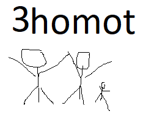

E_Kool
"Tahvel on pask"

Meeskonnaliikmed: Kristo || Kuurits || Marken || Lemming || Rohusaar
MEESKONNA SLOGAN |
MEESKONNA LOGO |
Meeskonnaliikmed: Kristo || Kuurits || Marken || Lemming || Rohusaar
Tahvel on halb kuna sealt on raske leida informatsiooni, õpetajate kodutööd ei lähe mõnikord üles ja tunniplaani ei ole näha.
Lisaks see on aeglane, peab sisselogima id-ga ning kui sa afk 2min see viskab sind välja. ekool on parem.
kõik OS-id sobivad, kus on olemas web browser.
Tüüp:
Platvorm: Server
Oleme Nigrod |

|
Kas sa oled kunagi misclickinud kuskil ja see on sind närvi ajanud, näiteks vajutanud close ja mitte minimize. Või kas sa oled otsinud midagi ja läinud mööda sellest, kus peale sellest mööda minemist, sa märkad ja karjud arvuti peale. Meie elame mugavuse ajastul, miks meie peame siiamaani mitme klõpsaga tegema asjaa mida on võimalik teha paariga. Pole vaja muretseda rohkem, meil on lahendus. TTHK Tunniplaani API või lihtsalt Tunniplaani shortcut. Sellega saate teie oma klassi tunniplaani näha lihtsalt ühe nupu vajutusega. Koos sellega ei pea rohkem minema läbi selle protsessi mida oli alguses õeldud ja lihtsalt ühe klõpsaga saaks oma tunniplaani näha *cheers sound effect*
Hetkel, kui tahame teada oma kooli tunniplaani, peame minema TTHK kodulehele, vaatama muudatusi ja siis eraldi minema EduPage tunniplaani lehele. Meie arust on see tüütu. Seega võiks luua API, mis soodustaks koolile uue tunniplaani front-endi tegemise.
Selle lahenduse eesmärk oleks anda õpilastele võimalust kasutada TTHK tunniplaani oma programmides ja luua nende andmetega front-end lahendus. Sellised lahendused võimaldaksid meil luua ühine platvorm tunniplaaniga seotud asjade jaoks
Meie hakkame kasutama API-d et saada spetsiiflise klassi (TARpe22) avada ühe nupuga. API kasutamisega saame meie kasutada tthk.ee ja edupage.ee-i et läbi selle saada oma klassi omapärast API-d selle API-ga saame automaatselt oma klassi kätte ja mitte kõige esimese tunniplaani tabeli tähestikust
Meie Lahendus pakkub mugavust Õpetajatele kui ka Õpilstele kuna see on päris tüütu käija kaks erinevat lehte läbi tunniplaanni oma kui ka tunniplaanimudatused meie API paneb need üheks et oleks hea ja mugav kõigil.
Selle lahenduse eesmärk oleks anda õpilastele võimalust kasutada TTHK tunniplaani oma programmides ja luua nende andmetega front-end lahendus. Sellised lahendused võimaldaksid meil luua ühine platvorm tunniplaaniga seotud asjade jaoks
Meie hakkame kasutama API-d et saada spetsiiflise klassi (TARpe22) avada ühe nupuga. API kasutamisega saame meie kasutada tthk.ee ja edupage.ee-i et läbi selle saada oma klassi omapärast API-d selle API-ga saame automaatselt oma klassi kätte ja mitte kõige esimese tunniplaani tabeli tähestikust
Kuna eesmärk on luua funktsionaalne ja kasutajasõbralik API, mis võimaldab õpilastel ja õpetajatel mugavalt juurde pääseda tunniplaanile, siis sobiks selleks Agile meetod. Agile metoodika võimaldab paindlikkust ja kiiret reageerimist muudatustele ning see on eriti kasulik projektide puhul, kus nõuded võivad muutuda arenduse käigus. Scrum, mis on üks Agile'i metoodikatest, võiks olla hea valik. Scrum jagab arendustöö lühikesteks iteratsioonideks, mida nimetatakse sprintideks. Iga sprint kestab tavaliselt 1-4 nädalat ja lõpeb kasutatava tarkvara töötava versiooni väljastamisega. See võimaldab tiimil kiiresti reageerida tagasisidele ja muudatustele ning tagab regulaarse tootearenduse. Lisaks võiks kasutada ka Lean'i arendusmetoodikat, mis keskendub raiskamise vähendamisele ning pidevale täiustamisele ja efektiivsuse suurendamisele. Lean metoodika aitaks tagada, et API arendusprotsess oleks efektiivne ja kulutõhus. Üldiselt võimaldavad Agile meetodid paindlikku ja kiiret reageerimist muutustele ning aitavad tagada, et lõpptulemus vastaks kasutajate vajadustele ja ootustele.
me ei ole homot |  |